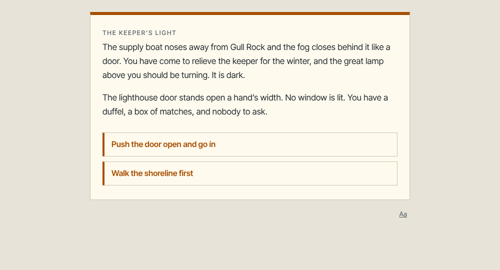
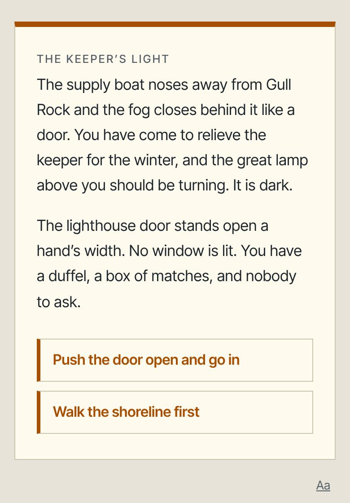

The Keeper's Light
You step off the supply boat onto Gull Rock to relieve the lighthouse keeper for the winter, and the great lamp is dark. It is a small mystery with eight endings, built from four objects and three states: a lamp that needs oil, a shore with something on it, a cliff you may not want to climb.
A typical playthrough: the shortest ending takes 3 choices (about a minute); most take 10 to 14 choices, about 7 minutes; the longest takes 22, about 11 minutes. 34 pages, 8 endings.

